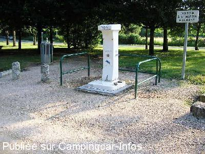

ASN = Aire de services avec stationnement nuit possible de :
ALLOGNY
(N° 131)
Accès/adresse :
Route de Bourges, D944
18110 ALLOGNY
18110 ALLOGNY
Latitude : (Nord) 47.2181° Décimaux ou 47° 13′ 5′′
Longitude : (Est) 2.32321° Décimaux ou 2° 19′ 23′′
Tarif : Gratuit
Type de borne : FLOT BLEU
Services :


Commerces
Autres informations :
Ouvert du 01/04 au 31/10
10 emplacements
Tel + 33 (0)248 640 407

Le 01/07/2005 par
de
Valérie
le 17/04/2011 :
aire gratuite et propre même si effectivement on ne peut pas vidanger les eaux usées sans sceau ou bassine.
Merci à la commune
aire gratuite et propre même si effectivement on ne peut pas vidanger les eaux usées sans sceau ou bassine.
Merci à la commune
de
Zoulou
le 13/09/2010 :
Bonjour. Rien de changé en Août 2010, ce n'est qu'une aire de pique-nique sur le bord de la route. L'accès au lac nous est interdit. Je suis allé dormir à Nouans le Fuselier, plus accueillant.
Bonjour. Rien de changé en Août 2010, ce n'est qu'une aire de pique-nique sur le bord de la route. L'accès au lac nous est interdit. Je suis allé dormir à Nouans le Fuselier, plus accueillant.
de
http://campingcar.jjbo.freesurf.fr
le 01/07/2005 :
Aire de vidange avec borne Flot Bleu sans électricité, eau gratuite, mais aucune possibilité de vider les eaux grises sans seau (pas de regard sur la plate forme). Proche d'un étang dont le stationnement est interdit aux CC !!! La seule possibilité est de rester sur le parking, trop proche de la route (D944) pour être au calme.
Suivre les conseils du panneau municipal qui préconise d'aller au camping de Saint Martin d'Auxigny à 10 km.
Aire de vidange avec borne Flot Bleu sans électricité, eau gratuite, mais aucune possibilité de vider les eaux grises sans seau (pas de regard sur la plate forme). Proche d'un étang dont le stationnement est interdit aux CC !!! La seule possibilité est de rester sur le parking, trop proche de la route (D944) pour être au calme.
Suivre les conseils du panneau municipal qui préconise d'aller au camping de Saint Martin d'Auxigny à 10 km.